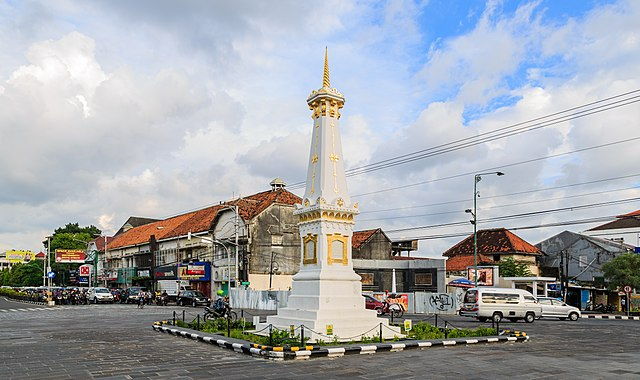
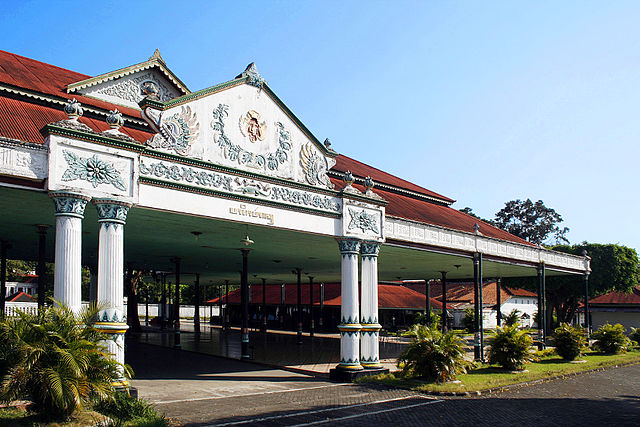
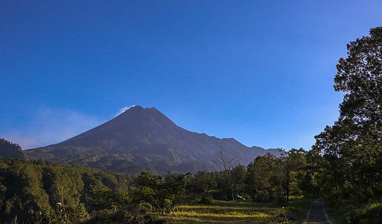

Sejarah

Kota Yogyakarta (bahasa Jawa: ꦪꦺꦴꦒꦾꦏꦂꦠ, translit. Ngayogyakarta, pengucapan bahasa Jawa: [kuʈɔ
ŋajogjɔˈkart̪ɔ]) atau dikenal oleh masyarakat setempat dengan nama Kota Jogja atau Kota Yogya adalah
ibu kota dan pusat pemerintahan Daerah Istimewa Yogyakarta, Indonesia. Kota ini adalah kota besar
yang mempertahankan konsep tradisional dan budaya Jawa. Kota Yogyakarta adalah kediaman bagi Sultan
Hamengkubuwana dan Adipati Paku Alam. Kota Yogyakarta merupakan salah satu kota terbesar di
Indonesia dan kota terbesar keempat di wilayah Pulau Jawa bagian selatan menurut jumlah penduduk.
Kota Yogyakarta juga pernah menjadi ibu kota RI pada tahun 1946.
Salah satu kecamatan di Yogyakarta, yaitu Kotagede pernah menjadi pusat Kesultanan Mataram antara
kurun tahun 1575–1640. Keraton (Istana) yang masih berfungsi dalam arti yang sesungguhnya adalah
Keraton Ngayogyakarta dan Puro Paku Alaman, yang merupakan pecahan dari Kesultanan Mataram. Pada
masa revolusi, Yogyakarta juga pernah menjadi ibu kota Indonesia antara tahun 1946 hingga 1950.
Etimologi

Nama Yogyakarta terambil dari dua kata, yaitu Ayogya atau Ayodhya yang berarti "kedamaian" (atau
tanpa perang, a "tidak", yogya merujuk pada yodya atau yudha, yang berarti "perang"), dan Karta yang
berarti "baik". Ayodhya merupakan kota yang bersejarah di India di mana wiracarita Ramayana terjadi.
Tapak keraton Yogyakarta sendiri menurut babad (misalnya Babad Giyanti) dan leluri (riwayat oral)
telah berupa sebuah dalem yang bernama Dalem Gerjiwati; lalu dinamakan ulang oleh Sunan Pakubuwana
II sebagai Dalem Ayogya.
Pusaka dan Identitas Daerah
Tombak Kyai Wijoyo Mukti

Tombak Kyai Wijoyo Mukti merupakan pusaka pemberian Raja Kraton Yogyakarta Sri Sultan
Hamengku Buwono X. Tombak ini dibuat tahun 1921 semasa pemerintahan Sri Sultan Hamengku
Buwono VIII. Senjata yang sering dipergunakan para prajurit ini mempunyai panjang 3 meter.
Tombak dengan pamor wos wutah wengkon dengan dhapur kudhuping gambir ini, landeannya
sepanjang 2,5 meter terbuat dari kayu walikun, yakni jenis kayu yang sudah lazim digunakan
untuk gagang tombak dan sudah teruji kekerasan dan keliatannya.
Sebelumnya tombak ini disimpan di bangsal Pracimosono dan sebelum diserahkan terlebih dahulu
dijamasi oleh KRT. Hastono Negoro, di dalem Yudonegaran. Pemberian nama Wijoyo Mukti baru
dilakukan bebarapa hari menjelang upacara penyerahan ke Pemkot Yogyakarta, pada peringatan
hari ulang tahun ke-53 Pemerintah kota Yogyakarta tanggal 7 Juni 2000. Upacara penyerahan
dilakukan di halaman Balaikota dan pusaka ini dikawal khusus oleh prajurit Kraton ”Bregodo
Prajurit Mantrijero”.
Tombak Kyai Wijoyo Mukti melambangkan kondisi Wijoyo Wijayanti. Artinya, kemenangan sejati
pada masa depan, di mana seluruh lapisan masyarakat dapat merasakan kesenangan lahir bathin
karena tercapainya tingkat kesejahteraan yang benar-benar merata.
Geografis

Yogyakarta terletak di bagian selatan pulau Jawa, tepatnya di bagian selatan tengah pulau Jawa. Namun
Yogyakarta tidak masuk dalam wilayah administrasi Jawa tengah. Secara geografis, Yogyakarta terletak
pada 8º 30′ – 7º 20′ Lintang Selatan, dan 109º 40′ – 111º 0′ Bujur Timur. Berdasarkan bentang
alamnya, kota ini dibedakan menjadi empat tipikal fisiografis yaitu wilayah Gunungapi Merapi,
Pegunungan Sewu, Kulon Progo dan Dataran Rendah.
Berdasarkan bentang alam tersebut, dapat terlihat pola persebaran penduduk Yogyakarta. Mereka
sebagian besar menghuni daerah dataran rendah seperti Sleman, Bantul, dan Kota Jogja. Inilah yang
menyebabkan daerah dataran rendah ini lebih maju dan memiliki sosial ekonomi tinggi dibandingkan
dengan wilayah lainnya.
Daerah ini juga memiliki dua Daerah Aliran Sungai besar yang menjadi aliran utama dari sungai-sungai
di Yogyakarta. DAS pertama adalah daerah Progo di bagian barat dan Opak-oya di bagian timur. Banyak
sungai-sungai yang mengalir diantaranya Sungai Serang, Sungai Opak, Sungai Bedog, Sungai Winongo dan
lain sebagainya.
Batas Wilayah
Kota Yogyakarta telah terintegrasi dengan sejumlah kawasan di sekitarnya, sehingga batas-batas
administrasi sudah tidak terlalu menonjol. Untuk menjaga keberlangsungan pengembangan kawasan
ini, dibentuklah sekretariat bersama Kartamantul (Yogyakarta, Sleman, dan Bantul) yang mengurusi
semua hal yang berkaitan dengan kawasan aglomerasi Yogyakarta dan daerah-daerah penyangga
(Depok, Mlati, Gamping, Kasihan, Sewon, dan Banguntapan).
Iklim dan Cuaca
Kota Yogyakarta memiliki iklim yang sama dengan wilayah lain di Indonesia yaitu beriklim tropis,
dengan tipe iklim muson tropis (Am). Angin muson timur–tenggara yang bersifat kering dan dingin
menyebabkan musim kemarau di wilayah kota Yogyakarta dan angin muson ini berlangsung pada
periode Mei hingga Oktober. Sementara itu, angin muson barat–barat daya yang bersifat lembab dan
membawa banyak uap air menyebabkan musim penghujan di wilayah kota Yogyakarta dan angin muson
ini bertiup pada periode November hingga April. Rata-rata curah hujan di wilayah kota Yogyakarta
adalah ±2012 milimeter per tahun dengan jumlah hari hujan berkisar antara 100–150 hari hujan per
tahunnya. Tingkat kelembapan rata-rata per tahun di wilayah ini adalah ±77%.